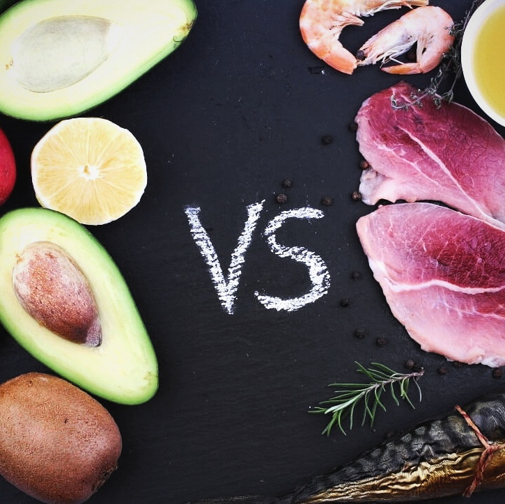

Веган среди мясоедов: 8 правил, которые помогут сохранить мир в семье

Преподаватель йога-студии «Healthy food» Лилия Осипова рассказывает, как стала фрукторианкой в семье, где любят мясо, и как ей удалось не превратить свой новый тип питания в яблоко раздора.
Год назад я полностью перешла на растительное питание, а точнее на фрукторианство, чем шокировала своих близких. Они не очень радостно восприняли мою идею и какое-то время крутили у виска. Первые шесть месяцев я вообще не ела ничего кроме фруктов, категорически отказываясь от других продуктов. И конечно, хотела привнести идеи здорового питания в жизнь своей семьи. В это время я начала подсаживать близких на свежевыжатые соки и овощные салаты. Я знала, что нужно очищать организм и добавлять эти блюда в рацион, но при этом я не собиралась никого насильно переводить на растительное питание. И, на самом деле, это самая большая и довольно распространенная ошибка – заставлять кого-то меняться против его воли. Человек готов переходить на растительное питание, когда его прижмет, и организм перестанет самостоятельно справляться. Стала бы я фрукторианкой, если бы была стройной и здоровой? Это еще вопрос. Просто в какой-то момент мои ресурсы стали заканчиваться, и я поняла, что хочу чувствовать себя здоровой и сейчас, и в старости. Так уж получилось, что после 40 лет у меня возникли проблемы с гормональной системой. По всем симптомам, начала сдавать щитовидная железа, и тут было два варианта: либо пить гормональные препараты и толстеть, либо попробовать изменить питание. В результате я нашла людей, которые ели только фрукты, и решилась на такой вариант.растительное питание. И, на самом деле, это самая большая и довольно распространенная ошибка – заставлять кого-то меняться против его воли. растительное питание. И, на самом деле, это самая большая и довольно распространенная ошибка – заставлять кого-то меняться против его воли. животного белка, который я всегда плохо переносила) к фрукторианству. Параллельно я заинтересовалась интуитивным питанием. Мне хотелось найти что-то, что мне понравится и при этом не потребует постоянного контроля. Никакая диета не будет долгой, потому что нельзя привыкнуть «есть правильно». Переход на растительное или видовое питание происходит с помощью обучения нашего организма и развития связи с собственным телом. То есть через понимание того, что нам нравится. Почему я зацепилась за интуитивное питание? Потому что поняла: никто другой не скажет мне, как правильно. Я сама должна понять, как, что и в каком количестве мне нужно есть.Это относится к любому человеку, поэтому я не применяю в своей семье методы насильственного перехода на растительную диету и фрукторианство, в частности. Как дети, так и супруг сами решают, что съесть на завтрак, обед и ужин, но при этом у нас существуют определенные правила, которые мы все соблюдаем. Их немного, но все они важны для того, чтобы каждый член семьи чувствовал себя комфортно, независимо от типа питания, которого придерживается.

1
Овощные салаты каждый день
Неважно, что у каждого лежит на тарелке в качестве основного блюда, но салат из свежих овощей там должен быть обязательно! Простейший вариант с капустой и морковью всем полюбился и стал уже привычным. Он отлично чистит организм, особенно если использовать ингредиенты в тертом виде.
2
У каждого своя полка в холодильнике
Когда мы расчищали холодильник, то выбросили всё: какие-то соусы, банки, непонятные продукты. Когда все полки стали пустыми, я выдала детям деньги и сказала: теперь вы можете покупать себе то, что хотите. Каждый получил право заполнить свою полку в холодильнике тем, чем считает нужным. Например, мой сын любит мясо, но при этом не ест помидоры. Несложно догадаться, что лежит на его полке.
3
Ничего не брать с чужой полки в холодильнике
Только с разрешения. Это может показаться странным, но у каждого члена семьи есть деньги на еду, которую он хочет покупать. Это приучает к дисциплине и помогает понять, чего нам хочется больше: свежий фрукт с моей полки или кусочек рыбы со своей. Интересно наблюдать за тем, как постепенно меняется содержимое холодильника.
4
Никакой вчерашней еды
Очень важное правило: готовить еду только на один раз! Никаких «супов на три дня вперед». К слову, вопрос с супами вообще отпал – их ест только дочь. И чтобы не мучаться с приготовлением, она заказывает их на обед вне дома. Все довольны, все счастливы. А всё, что готовится дома, сразу съедается. Это сложнее, чем готовить сразу на несколько дней, но зато хорошо дисциплинирует.
5
Каждый ест то, что он хочет
Например, мой сын любит свинину. Он научился ее не только выбирать, но и готовить так, как ему нравится. Сам захотел – сам приготовил. Поэтому у каждого из нас на тарелке могут быть разные блюда. Но обязательно со свежим салатом.
6
Не оставлять еду после ужина
Мы договорились, чтобы никто не оставлял по вечерам свою еду. Приготовили – съели, и никаких соблазнов для других. Иногда я прошу выжать мне сок на ночь, если поздно возвращаюсь домой. Я выпиваю его и ложусь спать. Такая привычка помогает избегать переедания, когда перед вами не маячит постоянно еда.
7
Никаких молочных продуктов
Это жесткое условие, которое я изначально поставила всей семье. У моего мужа все время был аллергический ринит, пока он употреблял в пищу молоко. А казеин – это самый аллергенный белок, о чем можно прочитать, например, в книге «Китайское исследование». Поэтому я давно запретила близким употреблять молочные продукты – будь то сыр, молоко или йогурты. Хотите мясо – ешьте, но молочку – нет!
8
Исключить пищевые добавки и магазинные сладости
Пожалуй, это основные правила, которых придерживается моя семья, в плане питания. Они позволяют сохранять баланс и не конфликтовать на почве еды. Каждый из нас сам вправе выбирать, что есть, чем заниматься и как жить. И какими бы добрыми не являлись наши намерения, не стоит другим навязывать свой выбор, даже когда речь идет о самых близких. Как показывает практика, вы не добьетесь ничего, кроме раздражения и непонимания с их стороны. Лучшее, что можно сделать, - это показать на личном примере, как изменить свою жизнь и улучшить здоровье с помощью пересмотра пищевых привычек. В свои 45 лет я поняла, что фрукторианство – наиболее подходящий для меня тип питания, который помогает оставаться мне энергичной, сытой и здоровой!